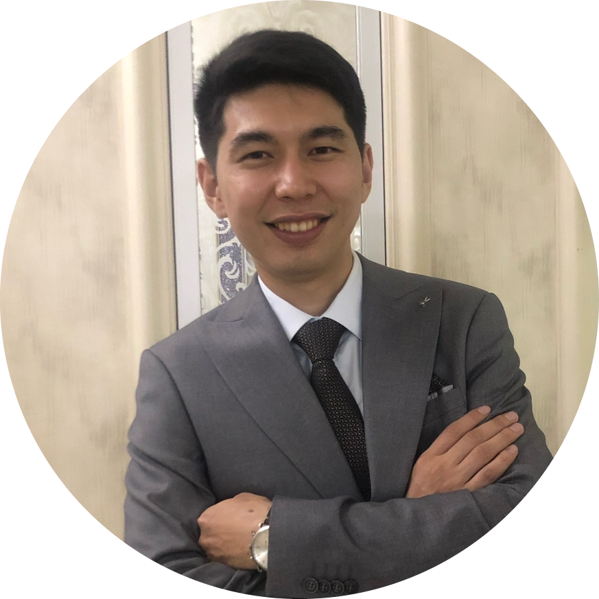

Kazybek
Spatayev
Future Web-Developer & Front-end Expert
Location
Almaty, Kazakhstan
Intro
What I am all about
My journey as an electronics technician in Phillip Morris Kazakhstan has been fulfilling, allowing me to develop a strong foundation in problem-solving, analytical thinking, and attention to detail. Over the years, I have honed my skills in troubleshooting and repairing electronic systems, and I am proud of the contributions I have made in this field. However, as technology evolves, I have come to realize that the world of web development offers a dynamic and creative avenue to explore my passion for problem-solving and innovation.
Experience
My work experience
Ecopharm International
Instrumentation Engineer
04.2019 - 06.2021
-
Conducted extensive testing and troubleshooting of various instrumentation systems, identifying and resolving complex issues within tight deadlines.
-
Successfully led a team of technicians in the installation and commissioning of a new control system for a large scale industrial plant, ensuring project completion on time and within budget.
-
Designed and implemented a preventive maintenance program for critical instrumentation systems, resulting in
a significant reduction in equipment failures and downtime.
-
Operating and programming CNC machines to manufacture precise and intricate parts. Skilled in interpreting technical drawings, selecting appropriate
cutting tools, and optimizing machine settings to achieve high-quality output.
-
Mentoring and guiding new workers in the workplace. Skilled in assessing individual strengths and development areas to create tailored training plans. Patient and approachable, fostering a positive learning environment to maximize the potential of new team members
PetroKazakhstan
Instrumentation Technician
06.2021 - 12.2021
-
Skilled in installing, maintaining, and repairing instrumentation and control systems used in oil and gas operations.
-
Troubleshooting complex electrical and electronic systems, including sensors, transmitters, analyzers, and control valves.
-
Knowledgeable in interpreting technical drawings, schematics, and manuals to ensure accurate installation and calibration of instruments.
LOTTE Rakhat
Control and Instrumentation Engineer
01.2022 - 07.2021
-
Troubleshoot and diagnose instrumentation issues, analyzing system performance and implementing effective solutions to minimize downtime and optimize performance
-
Collaborate closely with maintenance technicians and operators to ensure proper maintenance, calibration, and repair of instrumentation equipment.
-
Design and implement instrumentation and control systems for various manufacturing processes, ensuring accurate measurement, control, and automation.
Phillip Morris Kazakhstan
Electronics Technician
07.2022 - nowadays
-
Performing diagnostics, repairing electronic components, and optimizing the
performance of complex automation systems.
-
Expertise in working with the electrical and electronic systems of Hauni Protos
machines, including sensors, control panels, and servo-driven mechanisms.
-
Create and update electrical schematics using AutoCAD software, accurately
representing the wiring, connections, and components of the electronic systems.
20% JavaScript
I possess a foundational understanding of JS, including essential concepts like variables, data types, loops, and basic problem-solving skills in JS programming.
40% Python
I have a fundamental grasp of Python, encompassing core programming concepts and Object-Oriented Programming (OOP) principles. Additionally, I am proficient in using Tkinter for building graphical user interfaces (GUIs) in Python applications